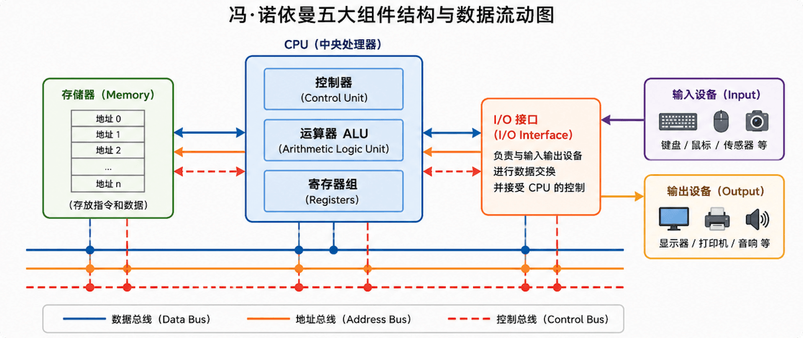
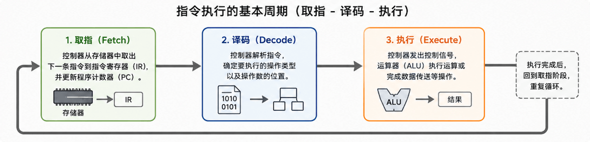

一台のコンピュータの全体像
1945年、数学者ジョン・フォン・ノイマン（John von Neumann）は、今日に至るまで影響を与え続けるコンピュータ・アーキテクチャの設計図を提唱しました。
この設計図の核となる考え方は極めてシンプルですが、過去80年間のすべての汎用コンピュータの基盤を築きました。
身近な例え：図書館の自動仕分けシステム
大きな図書館に入り、目的の本を素早く見つけて、遠くにいる友人に送りたいと想像してみてください。
以下のような手順を踏む必要があります：
第一歩、ニーズを入力する——図書館のコンピュータ端末に書名を入力します。
第二歩、場所を検索する——システムが書名からデータベースを検索し、その本がどの本棚にあるかを調べます。
第三歩、本を取り出す——機械アームが本棚からその本を取り出します。
第四歩、梱包して出力する——本を梱包し、配送伝票を貼って、郵便局へ送ります。
第五歩、調整と指揮——これらすべてを調整し、順序とペースを管理する中央制御システムが必要です。
このシステムをコンピュータ用語に置き換えると、フォン・ノイマン・アーキテクチャの五大構成要素に対応します：
| 図書館の例え | コンピュータの構成要素 | 役割 |
|---|---|---|
| 検索端末 | 入力装置 (Input) | 外部の情報をコンピュータへ送り込む |
| 本棚の本 | メモリ（記憶装置）(Memory) | プログラムとデータを格納する倉庫 |
| 機械アーム | 演算装置 (ALU) | 算術演算と論理演算を実行する |
| 荷物の配送 | 出力装置 (Output) | 結果をコンピュータから出力する |
| 中央制御システム | 制御装置 (Control Unit) | 各コンポーネントを指揮し、連携して動作させる |
お気づきですか？図書館のこのシステムが正常に機能する鍵は、個々のコンポーネント自体ではなく、それらの間に明確なデータフローのルールがあることです。
同様に、フォン・ノイマン・アーキテクチャの真髄も、「各コンポーネントがどのように接続され、通信するか」にあります。。
中核原理：五大コンポーネントの役割分担と連携
五大コンポーネント一覧
フォン・ノイマン・アーキテクチャは、コンピュータを機能的に独立しながらも密接に連携する5つの部分に分類します：
| コンポーネント | 英語 | わかりやすい説明 | 中核機能 |
|---|---|---|---|
| 演算装置 | ALU (Arithmetic Logic Unit) | コンピュータの「そろばん」 | 加減乗除、AND・OR・NOTなどの算術演算と論理演算を実行する |
| 制御装置 | Control Unit | コンピュータの「指令センター」 | メモリから命令を取得し、命令を解読し、制御信号を送って他のコンポーネントを指揮する |
| メモリ（記憶装置） | Memory | コンピュータの「倉庫」 | プログラムの命令と演算データを格納し、アドレスに基づいて読み書きする |
| 入力装置 | Input Devices | コンピュータの「耳目」 | 外部情報（キー入力、マウスクリック、センサーデータ）をコンピュータへ送り込む |
| 出力装置 | Output Devices | コンピュータの「口と手」 | 計算結果を人間が知覚できる形式で出力する（表示、印刷、音声） |
演算装置と制御装置を合わせたものが、いわゆるCPU（中央処理装置）です。これらはコンピュータの「頭脳」であり、メモリや入出力装置は「神経系」や「感覚器官」に相当します。
下のアーキテクチャ図では、5色の長方形で五大コンポーネントを表し、矢印付きの線でデータフローの方向を示しています。
下図は、現代のコンピュータで最も古典的なフォン・ノイマン・アーキテクチャを示しています。システム全体は、CPU、メモリ（Memory）、入力装置（Input）、出力装置（Output）、およびI/Oインターフェースの5つの部分で構成され、CPU内部にはさらに制御装置（Control Unit）、演算装置（ALU）、レジスタ群（Registers）が含まれます。
CPUは、データバス（Data Bus）、アドレスバス（Address Bus）、コントロールバス（Control Bus）を介してメモリやI/Oデバイスと通信します。アドレスバスはアクセス位置の指定を担当し、データバスは命令とデータの転送を担当し、コントロールバスは読み書きや割り込みなどの制御信号の送信を担当します。この3つが連携して、コンピュータ内部の情報交換を実現します。

三本のバス：データの高速道路
5つのコンポーネント間の接続は無秩序ではなく、3組の「バス」を通じて整然と情報を伝達します：
| バスの種類 | 英語 | 伝送内容 | 方向 |
|---|---|---|---|
| データバス | Data Bus | 実際の命令や演算データ | 双方向（CPUは読み書き可能） |
| アドレスバス | Address Bus | CPUがアクセスするメモリアドレス | 単方向（CPUがメモリにアドレスを出力） |
| コントロールバス | Control Bus | 読み書きイネーブル、割り込みなどの制御信号 | 制御装置が発信し、各コンポーネントを指揮する |
この3本のバスの違いを理解することが、コンピュータ内部の通信を理解する鍵です。次のように覚えるといいでしょう：アドレスバスは「どこへ」を伝え、データバスは「何を運ぶか」を担当し、コントロールバスは「どのような動作をするか」を決定します。
「プログラム内蔵（Stored-Program）」思想：フォン・ノイマン・アーキテクチャの核
五大コンポーネントの分類は外側の骨格にすぎず、フォン・ノイマン・アーキテクチャの真の革命性は、「プログラム内蔵（Stored-Program）」という概念にあります。
フォン・ノイマン以前は、コンピュータでタスクを実行するには、ケーブルを手動で抜き差しし、スイッチを設定し、場合によっては回路基板を交換する必要がありました。
タスクを変えるたびに、ハードウェアの物理的な接続を調整し直す必要がありました——これは、毎回料理をする前にコンロを組み立て直すようなものです。
フォン・ノイマンのブレークスルー：
- プログラムはデータである——計算手順を命令列として書き、データと同じメモリに格納する。
- ソフトウェアは変更可能——プログラムを変更するにはメモリ内の命令内容を修正するだけでよく、ハードウェアを変更する必要がない。
- 自動実行——CPUが自動的に、順序どおりメモリから命令を取得し、実行し、次の命令を取得する。
この考え方により、コンピュータは「専用計算ツール」から、「汎用コンピューティングプラットフォーム」へと変わりました。。
インタラクティブデモ：ホバーで五大コンポーネントを探索（runoob）

下のアーキテクチャ図の任意のコンポーネントにマウスをホバーすると、右側の対応する詳細説明カードがハイライト表示されます。「デモを実行」ボタンをクリックすると、小さな点がデータフローの矢印に沿って移動するのを観察できます——データが入力装置からメモリに流れ込み、CPUで演算され、再びメモリに戻り、最後に出力装置へ送られる完全な経路をシミュレーションします。
コンピュータの「頭脳」
アドレスに基づいて読み書きする
データがコンピュータに入る
結果がコンピュータから出力される
インタラクティブデモ：最小限のプログラム内蔵コンピュータをシミュレーション
以下のPythonコードは、極小のフォン・ノイマン型コンピュータをシミュレートしています——演算装置（加算を行う）、記憶装置（命令とデータを格納）、制御装置（PCポインタに従って順番に命令を取得して実行）、入出力があります。
コメントをよく読んでから、それを実行してください。
実例
極小フォン・ノイマン型コンピュータ・シミュレータ（runoob デモ）
五大コンポーネントの連携動作を表示：演算装置、制御装置、記憶装置、入力、出力
"""
class VonNeumannMachine:
"""フォン・ノイマン型アーキテクチャの凝縮版コンピュータ"""
def __init__(self):
# --- 記憶装置 (Memory) ---
# アドレスが0から始まる一次元配列で、命令とデータを同時に格納する
self.memory = [0] * 256
# --- 演算装置 (ALU) + レジスタ群 ---
self.accumulator = 0 # アキュムレータACC、ALUの中核レジスタ
self.temp = 0 # 一時レジスタ。オペランドを一時的に格納するために使用
# --- 制御装置 (Control Unit) ---
self.pc = 0 # プログラムカウンタPC。次の命令のアドレスを保持する
self.running = True # 実行フラグ
# --- 入力 / 出力 ---
# 入力デバイスが送信するデータをシミュレート
self.input_buffer = []
# 出力デバイスが表示するデータをシミュレート
self.output_buffer = []
# ============================================================
# 入力デバイス：外部データをメモリの指定アドレスに書き込む
# ============================================================
def input_to_memory(self, address, value):
print(f"[入力デバイス] メモリアドレス {address} にデータを書き込み: {value}")
self.memory[address] = value
# ============================================================
# 出力デバイス：メモリの指定アドレスからデータを読み取って表示する
# ============================================================
def output_from_memory(self, address):
val = self.memory[address]
print(f"[出力デバイス] メモリアドレス {address} からデータを読み取り: {val}")
self.output_buffer.append(val)
# ============================================================
# 記憶装置：読み取り / 書き込み操作（CPUはバスを介してアクセスする）
# ============================================================
def mem_read(self, address):
"""指定されたアドレスからメモリの内容を読み取る"""
if 0 <= address < len(self.memory):
return self.memory[address]
raise ValueError(f"不正なメモリアドレス: {address}")
def mem_write(self, address, value):
"""指定されたアドレスのメモリに数値を書き込む"""
if 0 <= address < len(self.memory):
self.memory[address] = value
else:
raise ValueError(f"不正なメモリアドレス: {address}")
# ============================================================
# 演算装置 (ALU)：算術演算を実行する
# ============================================================
def alu_add(self, operand):
"""ALU加算演算：ACC = ACC + オペランド"""
old_acc = self.accumulator
self.accumulator += operand
print(f"[ALU演算装置] 加算: {old_acc} + {operand} = {self.accumulator}")
def alu_load(self, operand):
"""ALUロード操作：即値をACCにロードする"""
self.accumulator = operand
print(f"[ALU演算装置] ロード: ACC = {operand}")
# ============================================================
# 制御装置：命令フェッチ、デコード、ディスパッチ、PC更新
# ============================================================
def fetch(self):
"""命令フェッチ段階：PCに基づいてメモリから次の命令を取り出す"""
instruction = self.mem_read(self.pc)
print(f"\n[制御装置 FETCH] PC={self.pc}, 取得した命令コード: {instruction}")
self.pc += 1 # 取得後、PCは自動的に1加算され、次の命令を指す
return instruction
def decode_and_execute(self, instruction):
"""
デコード + 実行段階：
極小の命令セットを定義します（オペコードとオペランドを混合してエンコード）：
1 LOAD 即値 — 次のメモリセルの値をACCにロードする
2 ADD アドレス — 指定されたアドレスの値をACCに加算する
3 STORE アドレス — ACCの値を指定されたアドレスに格納する
255 HALT — 停止
"""
if instruction == 1: # LOAD
operand = self.mem_read(self.pc)
self.pc += 1
print(f"[制御装置 DECODE] 命令: LOAD, オペランド: {operand}")
self.alu_load(operand)
elif instruction == 2: # ADD
address = self.mem_read(self.pc)
self.pc += 1
operand = self.mem_read(address)
print(f"[制御装置 DECODE] 命令: ADD アドレス[{address}] (値は {operand})")
self.alu_add(operand)
elif instruction == 3: # STORE
address = self.mem_read(self.pc)
self.pc += 1
print(f"[制御装置 DECODE] 命令: STORE アドレス[{address}] (値 = {self.accumulator})")
self.mem_write(address, self.accumulator)
elif instruction == 255: # HALT
print(f"[制御装置 DECODE] 命令: HALT（停止）")
self.running = False
else:
print(f"[制御装置] 未知の命令: {instruction}、停止")
self.running = False
# ============================================================
# 完全なプログラムを実行
# ============================================================
def run(self):
"""メインループ：命令フェッチ -> デコード -> 実行を繰り返し、停止するまで続ける"""
print("=" * 55)
print("極小フォン・ノイマン型コンピュータ起動")
print("=" * 55)
while self.running:
instr = self.fetch() # 命令フェッチ
self.decode_and_execute(instr) # デコード + 実行
print("\n" + "=" * 55)
print("プログラムの実行が完了し、コンピュータは停止しました")
print("=" * 55)
# ================================================================
# サンプルプログラム：10 + 20 を計算し、結果をアドレス100に格納する
# ================================================================
machine = VonNeumannMachine()
# プログラムをメモリに書き込む（命令とデータが混在する。これが「プログラム内蔵方式」です）
# アドレス 0: LOAD 10 (オペコード 1, オペランド 10)
# アドレス 2: ADD 100 (オペコード 2, オペランド 100、アドレス100から加数を取得することを示す)
# アドレス 4: STORE 200 (オペコード 3, オペランド 200、結果をアドレス200に格納することを示す)
# アドレス 6: HALT (オペコード 255)
machine.memory[0] = 1
machine.memory[1] = 10 # LOAD のオペランド：即値 10
machine.memory[2] = 2
machine.memory[3] = 100 # ADD のオペランド：データがあるアドレス 100
machine.memory[4] = 3
machine.memory[5] = 200 # STORE のオペランド：結果を格納するアドレス 200
machine.memory[6] = 255 # HALT
# アドレス100に加数20を格納する（入力デバイスがデータを書き込むのをシミュレート）
machine.input_to_memory(100, 20)
# プログラムを実行
machine.run()
# 結果を確認
result = machine.mem_read(200)
print(f"\n最終結果: メモリアドレス 200 の値 = {result}")
machine.output_from_memory(200)
print(f"出力デバイスバッファ: {machine.output_buffer}")
このプログラムを実行すると、命令が1つずつフェッチされ、デコードされ、実行される過程が見えます。これは、あなたのコンピュータ内で毎秒数億回起きていることです——実際のCPUの命令セットはこれよりはるかに複雑ですが。
まとめと確認
一言でまとめると
フォン・ノイマン型アーキテクチャは、コンピュータを演算装置、制御装置、記憶装置、入力装置、出力装置の5つの部分に分け、3組のバスで接続し、プログラムとデータを同じ記憶装置に格納します。CPUが順番に自動的に命令を取得して実行します。
セルフテスト
第1問フォン・ノイマン型アーキテクチャの五大コンポーネントのうち、どの2つがCPUと総称されますか？
- A. 演算装置と記憶装置
- B. 演算装置と制御装置
- C. 制御装置と記憶装置
- D. 入力装置と出力装置
正解：B
第2問アドレスバスの役割は何ですか？そのデータ転送方向はどうなっていますか？
- A. 演算結果を転送する；双方向
- B. 制御信号を転送する；制御装置が発信する
- C. メモリアドレスを転送する；CPUから記憶装置へ（単方向）
- D. 命令とデータを転送する；双方向
正解：C。アドレスバスはCPUから記憶装置へアドレス情報を出力するもので、単方向です。
第3問「プログラム内蔵方式」の考え方の核心的な意味は何ですか？
- A. コンピュータはこれ以降、演算装置を必要としない
- B. ソフトウェアを変更するにはメモリの内容を変更するだけでよく、ハードウェアを変更する必要がない
- C. 記憶装置の容量はCPUよりも大きい
- D. 入力装置と出力装置を統合できる
正解：B。プログラム内蔵方式により、コンピュータは専用機器から汎用プラットフォームになり、ソフトウェアを柔軟に交換できるようになりました。
その他の拡張
クリックしてノートを共有
<p style="font-size:14px;">ノートはこの記事の内容を拡張したものである必要があります！</p><br> <p style="font-size:12px;"><a href="../tougao.html" target="_blank">記事の投稿は、こちらをクリック</a></p> <p style="font-size:14px;"><a href="../w3cnote/runoob-user-test-intro.html" target="_blank">登録招待コードの取得方法</a></p> <h3 class="text-muted"><i class="fa fa-info-circle" aria-hidden="true"></i> ノートを共有する前に必ず<a href=";.html" class="runoob-pop">ログイン</a>！</h3> <p><a href="../w3cnote/runoob-user-test-intro.html" target="_blank">登録招待コードの取得方法</a></p>